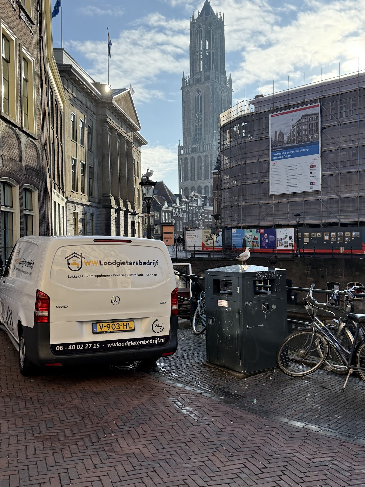
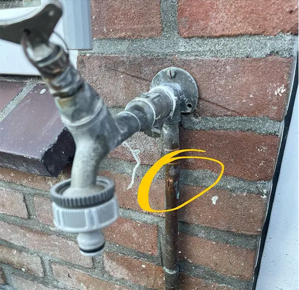
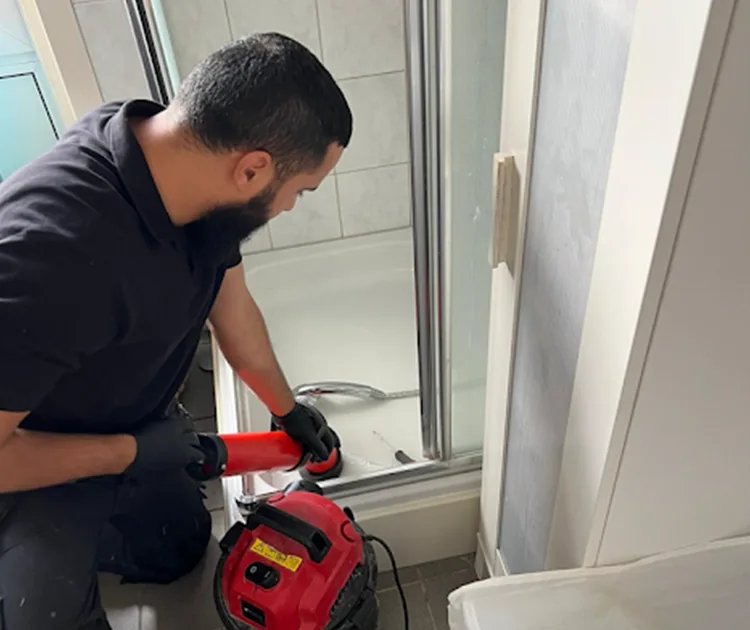
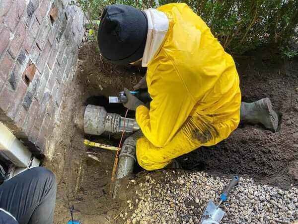
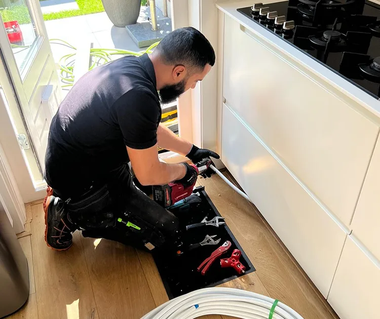
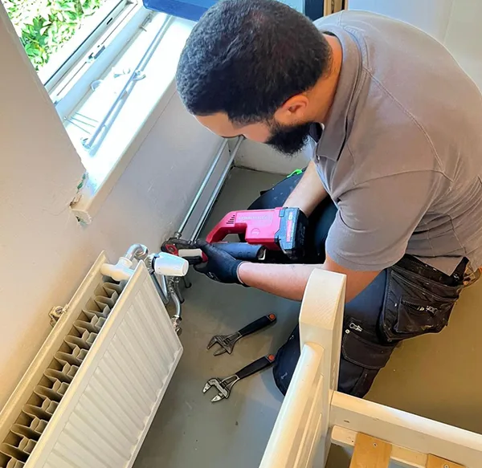
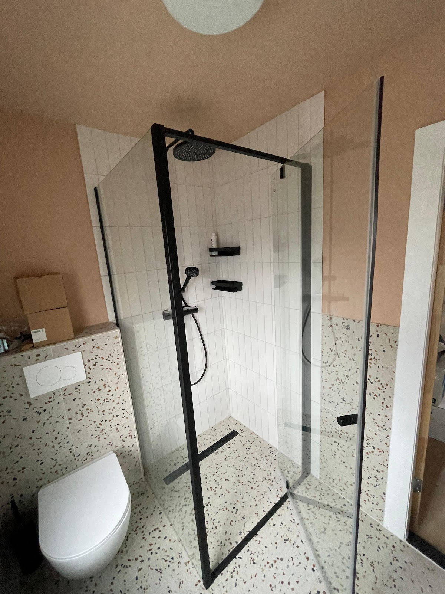
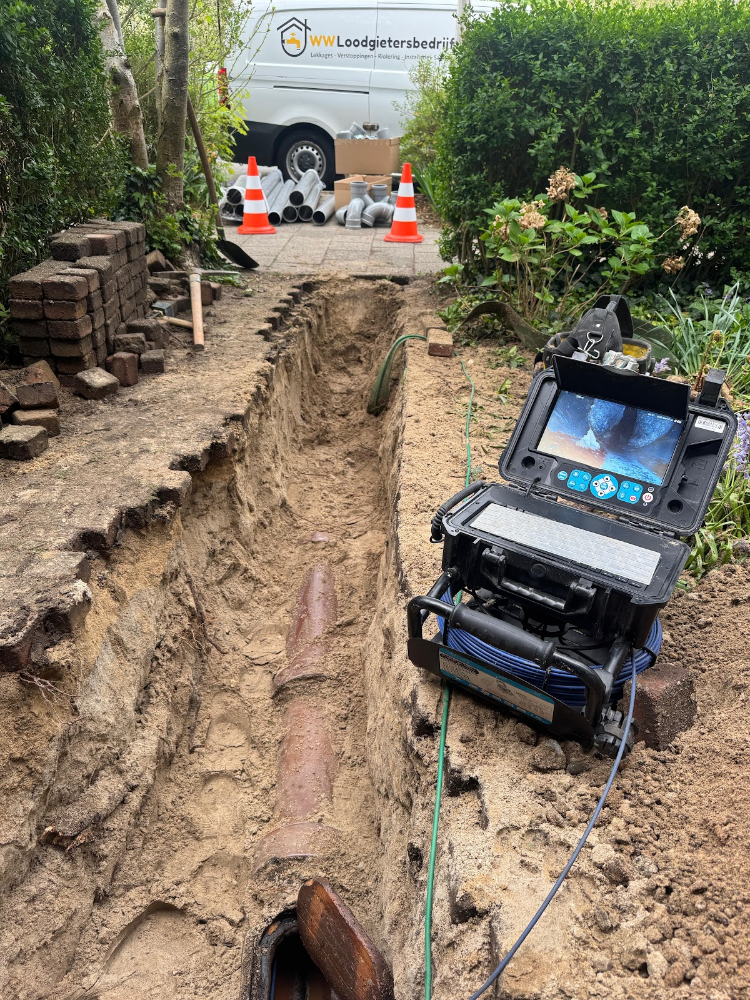
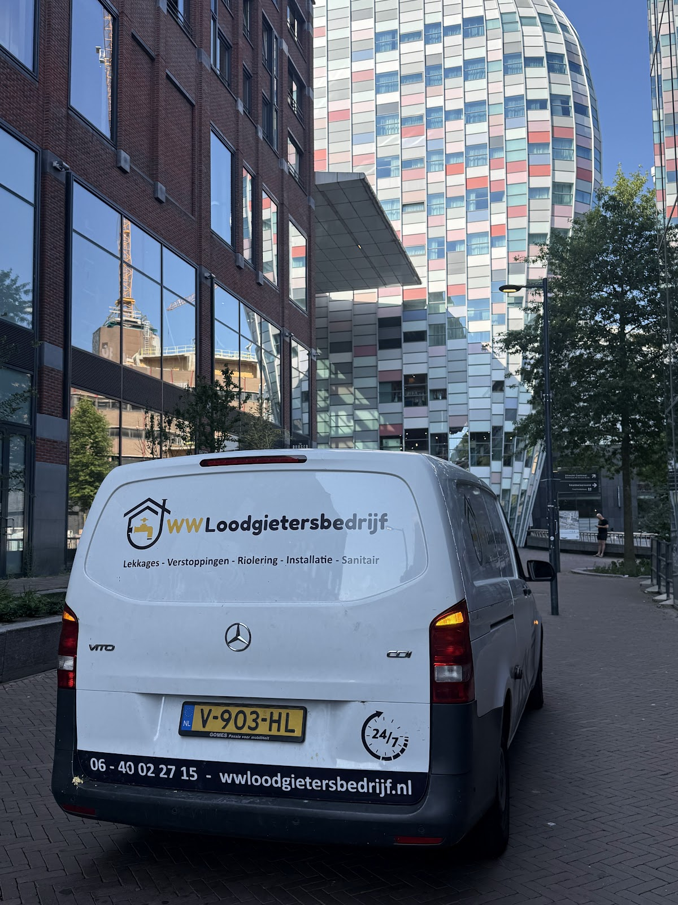

Loodgieter in Utrecht
Lekt het?
Bel ons, dag en nacht.
Lekkage, verstopping, leidingwerk of een nieuwe badkamer. Wij helpen in heel Utrecht en laten alles netjes en schoon achter.
4,9 uit 277 Google-reviews
Waar kunnen we mee helpen?
Wij werken vanuit Utrecht voor particulieren en bedrijven. Voor een klein lek of een complete badkamer: u heeft één aanspreekpunt, die uitlegt wat er nodig is en het netjes uitvoert.
Vertel ons wat er speelt: 06 40022715-

Lekkage en lekdetectie
Water waar het niet hoort, een natte muur of een vochtplek in het plafond. We zoeken gericht naar de bron, zodat er niet op goed geluk een muur of vloer open hoeft.
-

Verstopping verhelpen
Een verstopte wc, gootsteen, douche of afvoer. We zoeken uit waar het vastzit en zorgen dat het weer doorloopt.
-

Riool en rioolinspectie
Komt de verstopping steeds terug? Dan zit het vaak dieper. We inspecteren het riool, zoeken de oorzaak en graven als het moet.
-

Leidingwerk
Nieuwe waterleiding of een bestaande aanpassen? We leggen, verplaatsen en repareren leidingen voor keuken, badkamer en andere ruimtes.
-

Verwarming en cv-leidingen
Een radiator erbij, verplaatsen of een lekkende cv-leiding. We leggen aan, passen aan en repareren, in woningen en bedrijfspanden.
-

Sanitair en badkamer
Van een nieuwe kraan of toilet tot een complete badkamerrenovatie. Netjes geplaatst en goed aangesloten.
Lekkage? Dit kunt u nu al doen.
Beperk eerst de schade. Bel ons daarna direct, ook 's avonds en in het weekend. We bespreken samen wat er nodig is.
Bel 06 40022715Elke dag 24 uur bereikbaar.
-
1
Sluit de hoofdkraan bij een actieve lekkage, als dat veilig kan. Lekt alleen één kraan of toestel, draai dan alleen die afsluitkraan dicht.
-
2
Houd water weg van stroom. Komt het in de buurt van elektra, schakel dan die groep uit zonder het natte deel aan te raken.
-
3
Vang het water op zonder leidingen verder te belasten.
-
4
Maak foto's van de lekkage en de schade. Handig voor uw verzekeraar, en voor ons.
Wat Utrecht over ons zegt
op Google
"Goede communicatie. Goede service. Op tijd. Betrouwbaar. Prijs is ook goed. Niet goedkoop, maar dat moet je ook niet willen! Hij heeft meerdere klussen in het gebouw gedaan. Er is alles netjes afgewerkt en schoon achtergelaten. Veel schoner dan je vaak ziet bij klussers/ loodgieters. Ik kan iedereen aanraden voor deze"

"Perfect geholpen door deze mannen! We hadden een behoorlijke verstopping en hiervoor moesten ze graven en van daaruit al het opgestapelde vuil verwijderen dit hebben ze super gedaan en opgelost!! Zeer vriendelijke mensen en mocht ik ooit weer een loodgieter nodig hebben dan weet ik waar ik moet zijn! Prijs ook zeer net"
"Super goede werk van Wissem! Altijd snel, flexibel en mooie werk. Hij heeft een echt fijne badkamer en wc gemaakt voor ons"
"We hadden een lekkage, de mannen waren snel ter plaatste en hebben het lek gevonden. Vervolgens mooie nieuwe tegelvloer in de badkamer geplaatst en nieuwe radiator geplaatst. Allemaal snel en goed gedaan. Heel tevreden 👍"
"Werk langere tijd met deze loodgieter samen. Meer dan tevreden over zijn diensten, levert altijd kwaliteit en eerlijk werk."
Zo pakken we het aan
-
Stap 1
U neemt contact op
Bel of mail. Vertel waar het probleem zit, sinds wanneer het speelt en wat u al geprobeerd heeft. Een foto helpt.
-
Stap 2
We bekijken de situatie
We komen langs, beoordelen het probleem en bespreken vooraf de aanpak, planning en kosten.
-
Stap 3
We voeren het netjes uit
Komen we iets onverwachts tegen, dan overleggen we eerst. Bij oplevering hoort u wat er is gedaan en welk onderhoud zinvol is.

In elke wijk van Utrecht
Iedere buurt heeft zijn eigen woningen en installaties. Van oude stadswoningen tot nieuwbouw: we stemmen het werk af op uw huis.
- Oog in Al en Lombok
- Veel oudere woningen. Lekkages, oude waterleidingen en rioolproblemen.
- Tuindorp en Overvecht
- Gezinswoningen en appartementen. Verstoppingen, drukproblemen en lekkages.
- Oost en Kanaleneiland
- Oudere panden en grotere complexen. Leidingen, afvoer en waterdruk.
- Leidsche Rijn en Vleuten-De Meern
- Nieuwere installaties, waar toch lekkages of afstelproblemen ontstaan.
Bel ons gewoon even.
Voor spoed, een vraag of een offerte. Elke dag 24 uur bereikbaar.
06 40022715- Adres
- Goeman Borgesiuslaan 77, 3515 ET Utrecht
- Bereikbaar
- Maandag tot en met zondag, 24 uur per dag